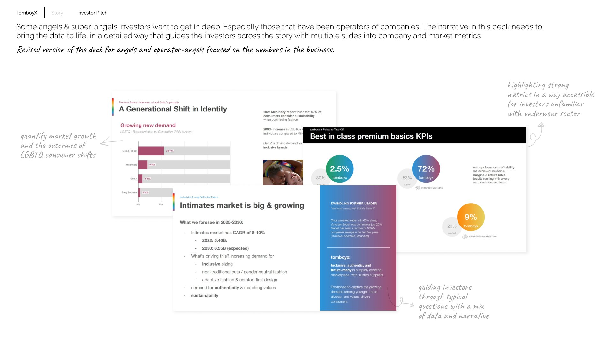
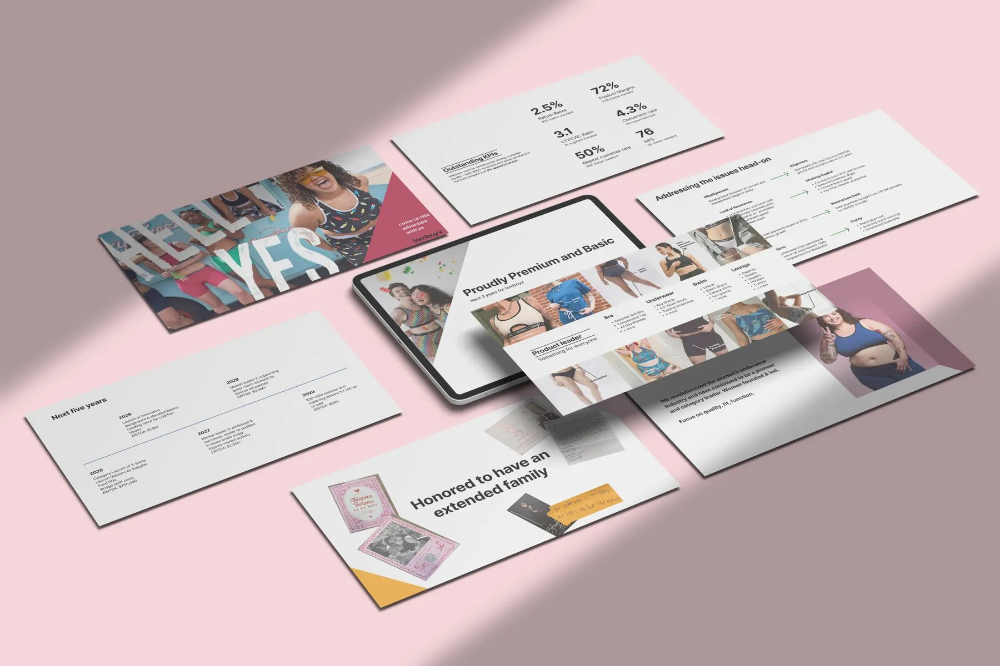

TomboyX, what we built for them
They had
A company people love, and numbers to match.
“Beloved underwear company”the work deck
They asked for
“a refreshed story to raise a re-capitalization in a down round.”the work deck
We found
Not one audience. Four, each in the room for a different reason.
“personally cared about the company and what it meant to them and their world”the early investors
“want to understand they are with "their" people”the values-driven investors
“want to get in deep”the angels who have run companies
“getting the company past screening rounds and in front of decision makers”the syndicates
We built






TomboyX had one true story and four kinds of people to tell it to.
We did not write four stories.
We found the part of the truth each room came for, and put it first.